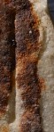

P - type1.2
- Script
- Latin
- Grapheme
- P
- Allograph
- type1.2
- Characteristic form:
-
- bowl is closed
- bowl is rounded
- downstroke is straight
Typology
More general types
type1Exemplar

Origin: Thermae Himeraeae
between AD 1 and AD 250
